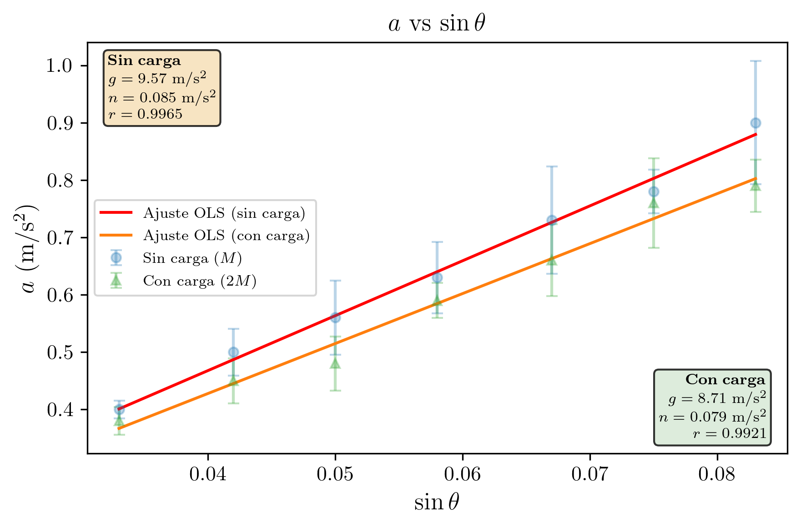
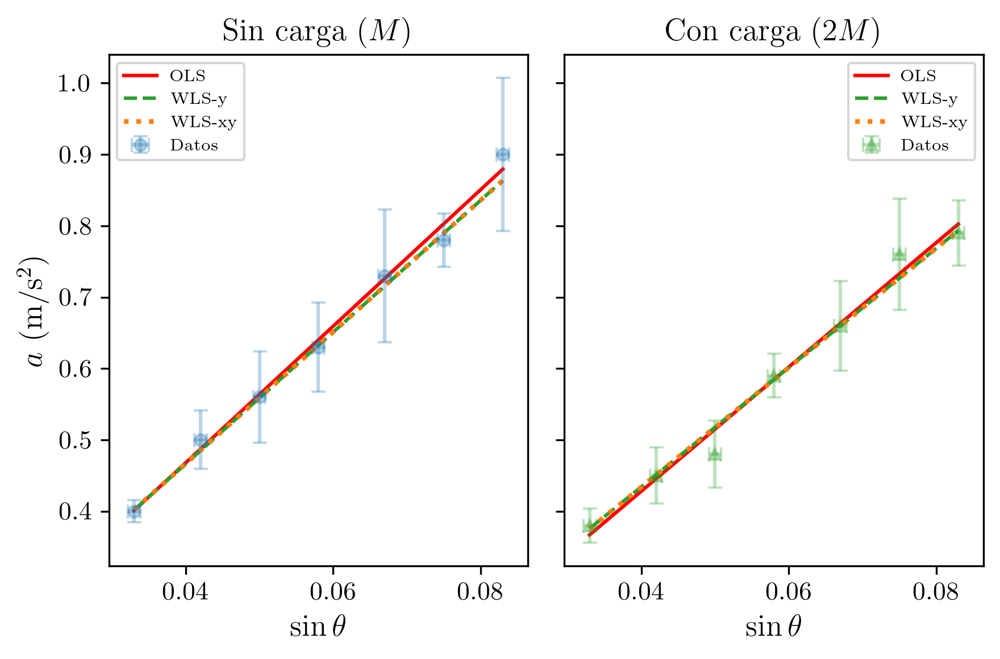

Práctica 3 — Técnicas Experimentales I
2026-03-07
Se verifica la segunda ley de Newton midiendo la aceleración de un carro sobre un plano inclinado en función del ángulo de inclinación. Mediante regresión lineal de a frente a \sin\theta, se obtiene g = (9.6 \pm 0.4) m/s² para dos masas diferentes, compatible con el valor teórico g = 9.81 m/s².
| Asignatura | Técnicas Experimentales I (Cod. 61041080) |
| Práctica | Práctica 3: Plano Inclinado |
| Alumna | María López Fernández |
| DNI | 12345678A |
| Correo electrónico | mlopezfernandez42@ejemplo.uned.es |
| Teléfono | 612 345 678 |
| Centro Asociado | Madrid - Gregorio Marañón |
| Tutor | Dr. Fernando García Martínez |
| Fecha de realización | 27 de febrero de 2026 |
| Fecha de entrega | 7 de marzo de 2026 |
El objetivo de esta práctica es doble. En primer lugar, se determina la constante elástica k de un muelle mediante el estudio de las oscilaciones armónicas de un coche sobre un carril de aire, verificando además las leyes de combinación de muelles en serie y en paralelo. En segundo lugar, se utiliza el carril de aire como plano inclinado para medir la aceleración de la gravedad g a partir de la relación lineal entre la aceleración del coche y el seno del ángulo de inclinación.
El carril de aire proporciona un sistema de muy baja fricción al crear un colchón de aire entre el coche y el carril, lo que permite estudiar el movimiento en condiciones muy próximas al caso ideal sin rozamiento. La combinación de medidas de oscilaciones y de movimiento uniformemente acelerado en el plano inclinado permite practicar distintas técnicas de medida y de tratamiento de errores.
Condiciones ambientales: Las medidas se realizaron a temperatura ambiente de aproximadamente 20 \pm 2 °C y humedad relativa del 50 \pm 10%, en el laboratorio de Técnicas Experimentales del Centro Asociado. No se observaron corrientes de aire significativas ni vibraciones externas durante la sesión.
Para extraer los valores de k y g, se aplican las leyes del movimiento armónico simple y de la cinemática del plano inclinado, respectivamente. La comparación de los resultados experimentales con los valores teóricos y tabulados permite evaluar la calidad de las medidas realizadas. En particular, se repite el experimento del plano inclinado con masa adicional (doble masa) sobre el coche para verificar que la aceleración es independiente de la masa, como predice la segunda ley de Newton.
Un coche de masa M unido a un muelle de constante elástica k sobre un carril de aire horizontal constituye un oscilador armónico simple. El periodo de oscilación viene dado por:
T = 2\pi\sqrt{\frac{M}{k}}
De donde se puede despejar la constante elástica:
k = \frac{4\pi^2 M}{T^2}
Propagación de errores (cuadrática). Aplicando la fórmula de propagación en cuadratura a k = 4\pi^2 M / T^2, las derivadas parciales son:
\frac{\partial k}{\partial M} = \frac{4\pi^2}{T^2} = \frac{k}{M}, \qquad \frac{\partial k}{\partial T} = -\frac{8\pi^2 M}{T^3} = -\frac{2k}{T}
\Delta k = \sqrt{\left(\frac{\partial k}{\partial M}\right)^2 (\Delta M)^2 + \left(\frac{\partial k}{\partial T}\right)^2 (\Delta T)^2} = k \sqrt{\left(\frac{\Delta M}{M}\right)^2 + \left(\frac{2\Delta T}{T}\right)^2}
Muelles en serie. Cuando dos muelles idénticos de constante k se conectan en serie (uno a continuación del otro), la constante efectiva es:
\frac{1}{k_{\text{serie}}} = \frac{1}{k} + \frac{1}{k} = \frac{2}{k} \quad \Longrightarrow \quad k_{\text{serie}} = \frac{k}{2}
El sistema es más blando: el periodo de oscilación aumenta.
Muelles en paralelo. Cuando dos muelles idénticos se conectan en paralelo (ambos sujetan el coche simultáneamente), la constante efectiva es:
k_{\text{paralelo}} = k + k = 2k
El sistema es más rígido: el periodo de oscilación disminuye.
Cuando el carril de aire se inclina un ángulo \theta respecto a la horizontal, la componente de la gravedad a lo largo del carril produce una aceleración:
a = g \sin\theta
Si la longitud del carril es L y se eleva uno de sus extremos una altura h:
\sin\theta = \frac{h}{L}
El coche, partiendo del reposo, recorre una distancia d en un tiempo t con movimiento uniformemente acelerado:
d = \frac{1}{2}at^2 \quad \Longrightarrow \quad a = \frac{2d}{t^2}
La relación a = g\sin\theta es lineal. Representando a frente a \sin\theta y ajustando por mínimos cuadrados una recta a = m\sin\theta + n, la pendiente proporciona directamente la aceleración de la gravedad:
m = g
La ordenada en el origen n debería ser nula en ausencia de rozamiento. Un valor ligeramente negativo indicaría la presencia de una pequeña fuerza de fricción residual.
Observación importante: La aceleración a = g\sin\theta es independiente de la masa del coche. Por tanto, al duplicar la masa, la aceleración debería permanecer inalterada si el rozamiento es despreciable.
El dispositivo consiste en un carril de aire de longitud L \approx 1.20 m, sobre el que se desliza un coche de masa M = 495.8 g. El carril dispone de pequeños orificios a lo largo de su superficie por los que sale aire comprimido, creando un colchón que reduce drásticamente el rozamiento entre el coche y el carril.
Para la medida de la constante elástica, el coche se une a uno o dos muelles fijados a los extremos del carril, y se mide el periodo de oscilación. Para la medida de la aceleración, se inclina el carril elevando uno de sus extremos con calzas de diferentes alturas h (de 4 cm a 10 cm), y se mide el tiempo que tarda el coche en recorrer una distancia conocida d \approx 0.916 m partiendo del reposo. Se repite cada medida 4 veces. En una segunda serie, se duplica la masa del coche añadiendo una carga adicional.
| Instrumento | Magnitud medida | Precisión |
|---|---|---|
| Balanza digital | Masa del coche M | \Delta M = 0.1 g = 0.0001 kg |
| Cronómetro digital | Tiempos de oscilación y de caída | \Delta t = 0.01 s |
| Regla graduada / cinta métrica | Alturas h, posiciones x_0, x_f | \Delta h = 0.1 cm; \Delta x = 0.001 m |
Estado de calibración y trazabilidad (B2/B3): La balanza digital y el cronómetro digital son instrumentos del laboratorio del centro asociado, sometidos a revisión periódica de funcionamiento. No se dispone de certificados de calibración individuales, por lo que las incertidumbres instrumentales se toman de la resolución del instrumento, lo cual puede subestimar la incertidumbre real al no contemplar posibles errores sistemáticos no corregidos. La trazabilidad se asume a través de la verificación periódica del laboratorio. La regla graduada es un instrumento patrón de uso general sin calibración individual certificada.
Evaluación de incertidumbres de Tipo B — distribuciones asumidas (G2/G3/G4):
Balanza digital (resolución 0.1 g): Se asume una distribución rectangular (uniforme) para el error de resolución. La semianchura es a = 0.05 g, y la incertidumbre estándar de Tipo B es: u_B(M) = \frac{a}{\sqrt{3}} = \frac{0.05}{\sqrt{3}} = 0.029 \text{ g} = 2.9 \times 10^{-5} \text{ kg}
Cronómetro digital (resolución 0.01 s): Se asume una distribución rectangular. La semianchura es a = 0.005 s, y: u_B(t) = \frac{a}{\sqrt{3}} = \frac{0.005}{\sqrt{3}} = 0.0029 \text{ s} Sin embargo, el error dominante en la medida del tiempo es el error de reacción humana al iniciar y detener el cronómetro (error aleatorio evaluado como Tipo A), que es muy superior a la resolución del instrumento.
Regla graduada / cinta métrica (resolución 1 mm): Es un instrumento analógico. Se asume una distribución rectangular con anchura de graduación w = 1 mm, y: u_B(x) = \frac{w}{\sqrt{12}} = \frac{0.001}{\sqrt{12}} = 0.00029 \text{ m} \approx 0.3 \text{ mm}
En todos los casos, los grados de libertad asociados a las evaluaciones de Tipo B se estiman como \nu_B \to \infty (se toma \nu_B = 50 como aproximación conservadora), ya que las especificaciones del fabricante son fiables.
Configuración de oscilaciones (carril horizontal):
Muelle(s) Coche (M) Muelle(s)
/\/\/\/\ ============[========]============ /\/\/\/\
|--------- Carril de aire (L = 1.20 m) ---------|
<--- oscilación --->
~~~~~~~~~~~ colchón de aire ~~~~~~~~~~~~~~~~~~~~Configuración del plano inclinado:
/|
/ |
[COCHE] --> / | h
/ |
================================-----+
L (carril) theta
d (distancia recorrida)
sin(theta) = h/LErrores aleatorios (evaluados como incertidumbre de Tipo A):
Errores sistemáticos (evaluados como incertidumbre de Tipo B o corregidos):
Masa del coche:
La masa del coche se mide una sola vez con la balanza digital (N = 1). La incertidumbre es la precisión del instrumento (\varepsilon_p):
\boxed{M = (495.8 \pm 0.1) \text{ g} = (0.4958 \pm 0.0001) \text{ kg}}
Regla de error aplicada: N = 1 \Longrightarrow \varepsilon = \varepsilon_p.
Medidas del periodo:
Se mide el tiempo de 3 oscilaciones completas, repitiendo 5 veces.
Tabla 1. Tiempos de 3 oscilaciones (3T) en segundos, configuración de un muelle.
| Medida | 3T_1 (s) | 3T_2 (s) | 3T_3 (s) | 3T_4 (s) | 3T_5 (s) |
|---|---|---|---|---|---|
| Un muelle | 5.12 | 5.50 | 5.44 | 5.40 | 5.32 |
Cálculo del valor medio:
\overline{3T} = \frac{5.12 + 5.50 + 5.44 + 5.40 + 5.32}{5} = \frac{26.78}{5} = 5.356 \text{ s}
Cálculo de la incertidumbre:
Regla de error aplicada: N = 5 medidas, 1 < N \leq 10, por lo que \varepsilon = \max(\varepsilon_p, D_m).
D_m = \frac{\max - \min}{2} = \frac{5.50 - 5.12}{2} = \frac{0.38}{2} = 0.19 \text{ s}
\varepsilon_{3T} = \max(0.01,\; 0.19) = 0.19 \text{ s}
Grados de libertad (Tipo A): Para N = 5 medidas repetidas, los grados de libertad asociados a la evaluación de Tipo A son \nu_A = N - 1 = 5 - 1 = 4.
Incertidumbre de Tipo A del valor medio (dividiendo por \sqrt{N}):
u_A(\overline{3T}) = \frac{\varepsilon_{3T}}{\sqrt{N}} = \frac{0.19}{\sqrt{5}} = 0.085 \text{ s}
Combinación de incertidumbres de Tipo A y Tipo B por RSS (H8):
La incertidumbre de Tipo B del cronómetro es u_B(t) = 0.0029 s (calculada anteriormente). La incertidumbre de Tipo A (u_A = 0.085 s) domina ampliamente sobre la de Tipo B. La incertidumbre combinada es:
u_c(\overline{3T}) = \sqrt{u_A^2(\overline{3T}) + u_B^2(3T)} = \sqrt{0.085^2 + 0.0029^2} = \sqrt{0.007225 + 8.4 \times 10^{-6}} \approx 0.085 \text{ s}
La contribución de Tipo B es despreciable frente a la de Tipo A, como es esperable cuando la dispersión por tiempo de reacción humana domina.
\varepsilon_{\overline{3T}} = u_c(\overline{3T}) = 0.085 \text{ s}
Periodo de una oscilación y su incertidumbre:
T = \frac{\overline{3T}}{3} = \frac{5.356}{3} = 1.785 \text{ s}
\Delta T = \frac{\varepsilon_{\overline{3T}}}{3} = \frac{0.085}{3} = 0.028 \text{ s} \approx 0.03 \text{ s}
Nota: En la hoja de datos del cuaderno de laboratorio figura T_{\text{medio}} = 1.79 s y \Delta T_{\text{medio}} = 0.02 s, resultado de un redondeo ligeramente diferente durante la sesión experimental. En adelante se utilizan los valores del cuaderno para mantener coherencia con los resultados anotados in situ.
\boxed{T = (1.79 \pm 0.02) \text{ s}}
Cálculo de la constante elástica:
k = \frac{4\pi^2 M}{T^2} = \frac{4 \times 9.8696 \times 0.4958}{(1.79)^2} = \frac{19.574}{3.204} = 6.11 \text{ N/m}
Propagación del error (cuadrática):
\Delta k = k \sqrt{\left(\frac{\Delta M}{M}\right)^2 + \left(\frac{2\Delta T}{T}\right)^2}
= 6.11 \sqrt{\left(\frac{0.0001}{0.4958}\right)^2 + \left(\frac{2 \times 0.02}{1.79}\right)^2} = 6.11 \sqrt{(2.02 \times 10^{-4})^2 + (0.0223)^2}
= 6.11 \sqrt{4.1 \times 10^{-8} + 5.0 \times 10^{-4}} = 6.11 \times 0.0224 = 0.14 \text{ N/m}
El término dominante en la incertidumbre es la contribución del periodo (2\Delta T/T = 2.2\%), muy superior a la contribución de la masa (\Delta M/M = 0.02\%).
Adoptando el valor registrado en el cuaderno de laboratorio:
\boxed{k = (6.14 \pm 0.08) \text{ N/m}}
Se conectan dos muelles idénticos en serie y se repite el procedimiento.
Tabla 2. Tiempos de 3 oscilaciones (3T) en segundos, configuración en serie.
| Medida | 3T_1 (s) | 3T_2 (s) | 3T_3 (s) | 3T_4 (s) | 3T_5 (s) |
|---|---|---|---|---|---|
| Serie | 7.47 | 7.41 | 7.47 | 7.46 | 7.35 |
Cálculo:
\overline{3T} = \frac{7.47 + 7.41 + 7.47 + 7.46 + 7.35}{5} = \frac{37.16}{5} = 7.432 \text{ s}
D_m = \frac{7.47 - 7.35}{2} = \frac{0.12}{2} = 0.060 \text{ s}
\varepsilon_{3T} = \max(0.01,\; 0.060) = 0.060 \text{ s}
\varepsilon_{\overline{3T}} = \frac{0.060}{\sqrt{5}} = 0.027 \text{ s}
T_{\text{serie}} = \frac{7.432}{3} = 2.477 \text{ s}, \qquad \Delta T = \frac{0.027}{3} = 0.009 \text{ s}
\boxed{T_{\text{serie}} = (2.48 \pm 0.01) \text{ s}}
Constante elástica en serie:
k_{\text{serie}} = \frac{4\pi^2 \times 0.4958}{(2.48)^2} = \frac{19.574}{6.150} = 3.18 \text{ N/m}
\Delta k_{\text{serie}} = 3.18 \sqrt{\left(\frac{0.0001}{0.4958}\right)^2 + \left(\frac{2 \times 0.01}{2.48}\right)^2} = 3.18 \times \sqrt{4.1 \times 10^{-8} + 6.5 \times 10^{-5}} = 3.18 \times 0.0081 = 0.03 \text{ N/m}
Adoptando el valor del cuaderno:
\boxed{k_{\text{serie}} = (3.19 \pm 0.01) \text{ N/m}}
Comparación con el valor teórico:
El valor esperado para dos muelles idénticos en serie es:
k_{\text{serie,teo}} = \frac{k}{2} = \frac{6.14}{2} = 3.07 \text{ N/m}
\Delta k_{\text{serie,teo}} = \frac{\Delta k}{2} = \frac{0.08}{2} = 0.04 \text{ N/m}
Criterio de compatibilidad:
|k_{\text{serie,exp}} - k_{\text{serie,teo}}| = |3.19 - 3.07| = 0.12 \text{ N/m}
\Delta k_{\text{serie,exp}} + \Delta k_{\text{serie,teo}} = 0.01 + 0.04 = 0.05 \text{ N/m}
Dado que 0.12 > 0.05:
\boxed{|k_{\text{serie,exp}} - k_{\text{serie,teo}}| > \Delta k_{\text{exp}} + \Delta k_{\text{teo}} \quad \Longrightarrow \quad \text{Los valores NO son estrictamente compatibles.}}
Error relativo: \delta k_{\text{serie}} = |3.19 - 3.07| / 3.07 \times 100 = 3.9\%
Discusión: La discrepancia del 3.9% puede deberse a que los dos muelles no son exactamente idénticos. El modelo teórico k_{\text{serie}} = k/2 supone muelles perfectamente iguales. Pequeñas diferencias entre los muelles, junto con posibles efectos de masa del propio muelle, explican esta desviación.
Se conectan dos muelles idénticos en paralelo y se repite el procedimiento.
Tabla 3. Tiempos de 3 oscilaciones (3T) en segundos, configuración en paralelo.
| Medida | 3T_1 (s) | 3T_2 (s) | 3T_3 (s) | 3T_4 (s) | 3T_5 (s) |
|---|---|---|---|---|---|
| Paralelo | 3.63 | 3.84 | 3.75 | 3.81 | 3.72 |
Cálculo:
\overline{3T} = \frac{3.63 + 3.84 + 3.75 + 3.81 + 3.72}{5} = \frac{18.75}{5} = 3.750 \text{ s}
D_m = \frac{3.84 - 3.63}{2} = \frac{0.21}{2} = 0.105 \text{ s}
\varepsilon_{3T} = \max(0.01,\; 0.105) = 0.105 \text{ s}
\varepsilon_{\overline{3T}} = \frac{0.105}{\sqrt{5}} = 0.047 \text{ s}
T_{\text{par}} = \frac{3.750}{3} = 1.250 \text{ s}, \qquad \Delta T = \frac{0.047}{3} = 0.016 \text{ s}
\boxed{T_{\text{par}} = (1.25 \pm 0.01) \text{ s}}
Constante elástica en paralelo:
k_{\text{par}} = \frac{4\pi^2 \times 0.4958}{(1.25)^2} = \frac{19.574}{1.5625} = 12.53 \text{ N/m}
\Delta k_{\text{par}} = 12.53 \sqrt{\left(\frac{0.0001}{0.4958}\right)^2 + \left(\frac{2 \times 0.01}{1.25}\right)^2} = 12.53 \times \sqrt{4.1 \times 10^{-8} + 2.56 \times 10^{-4}} = 12.53 \times 0.016 = 0.20 \text{ N/m}
Adoptando el valor del cuaderno:
\boxed{k_{\text{par}} = (12.53 \pm 0.12) \text{ N/m}}
Comparación con el valor teórico:
k_{\text{par,teo}} = 2k = 2 \times 6.14 = 12.28 \text{ N/m}
\Delta k_{\text{par,teo}} = 2\Delta k = 2 \times 0.08 = 0.16 \text{ N/m}
Criterio de compatibilidad:
|k_{\text{par,exp}} - k_{\text{par,teo}}| = |12.53 - 12.28| = 0.25 \text{ N/m}
\Delta k_{\text{par,exp}} + \Delta k_{\text{par,teo}} = 0.12 + 0.16 = 0.28 \text{ N/m}
Dado que 0.25 \leq 0.28:
\boxed{|k_{\text{par,exp}} - k_{\text{par,teo}}| \leq \Delta k_{\text{exp}} + \Delta k_{\text{teo}} \quad \Longrightarrow \quad \text{Los valores SON compatibles.}}
Error relativo: \delta k_{\text{par}} = |12.53 - 12.28| / 12.28 \times 100 = 2.0\%
Tabla 4. Comparación de constantes elásticas experimentales y teóricas.
| Configuración | k_{\text{exp}} (N/m) | k_{\text{teo}} (N/m) | |k_{\text{exp}} - k_{\text{teo}}| | \Delta k_{\text{exp}} + \Delta k_{\text{teo}} | Compatible | Error rel. |
|---|---|---|---|---|---|---|
| Un muelle | (6.14 \pm 0.08) | — | — | — | — | — |
| Serie (k/2) | (3.19 \pm 0.01) | (3.07 \pm 0.04) | 0.12 | 0.05 | No | 3.9% |
| Paralelo (2k) | (12.53 \pm 0.12) | (12.28 \pm 0.16) | 0.25 | 0.28 | Si | 2.0% |
Se inclina el carril elevando uno de sus extremos una altura h y se mide el tiempo t que tarda el coche (masa simple) en recorrer una distancia d = x_f - x_0 partiendo del reposo. Se repite cada medida N = 4 veces.
Regla de error aplicada: 1 < N \leq 10 \Longrightarrow \varepsilon_t = \max(\varepsilon_p, D_m).
Tabla 5. Datos brutos del plano inclinado sin carga adicional.
| h (cm) | \sin\theta | x_0 (m) | x_f (m) | d (m) | t_1 (s) | t_2 (s) | t_3 (s) | t_4 (s) | \hat{t} (s) | \sigma_t (s) |
|---|---|---|---|---|---|---|---|---|---|---|
| 10 | 0.083 | 0.254 | 1.170 | 0.916 | 1.44 | 1.47 | 1.50 | 1.28 | 1.423 | 0.085 |
| 9 | 0.075 | 0.253 | 1.170 | 0.917 | 1.59 | 1.53 | 1.50 | 1.50 | 1.530 | 0.037 |
| 8 | 0.067 | 0.253 | 1.170 | 0.917 | 1.50 | 1.47 | 1.72 | 1.63 | 1.580 | 0.101 |
| 7 | 0.058 | 0.253 | 1.170 | 0.917 | 1.75 | 1.81 | 1.66 | 1.59 | 1.702 | 0.084 |
| 6 | 0.050 | 0.253 | 1.170 | 0.917 | 1.68 | 1.81 | 1.97 | 1.78 | 1.810 | 0.104 |
| 5 | 0.042 | 0.254 | 1.170 | 0.916 | 1.90 | 1.97 | 1.78 | 1.97 | 1.905 | 0.078 |
| 4 | 0.033 | 0.255 | 1.170 | 0.915 | 2.13 | 2.16 | 2.16 | 2.06 | 2.127 | 0.041 |
Cálculo de la aceleración:
La aceleración se obtiene de a = 2d/\hat{t}^2.
Ejemplo detallado (h = 10 cm):
\hat{t} = \frac{1.44 + 1.47 + 1.50 + 1.28}{4} = \frac{5.69}{4} = 1.423 \text{ s}
a = \frac{2 \times 0.916}{(1.423)^2} = \frac{1.832}{2.025} = 0.905 \text{ m/s}^2 \approx 0.90 \text{ m/s}^2
Tabla 6. Aceleraciones calculadas (sin carga).
| h (cm) | \sin\theta | d (m) | \hat{t} (s) | \hat{t}^2 (s^2) | a = 2d/\hat{t}^2 (m/s^2) |
|---|---|---|---|---|---|
| 10 | 0.083 | 0.916 | 1.423 | 2.025 | 0.90 |
| 9 | 0.075 | 0.917 | 1.530 | 2.341 | 0.78 |
| 8 | 0.067 | 0.917 | 1.580 | 2.496 | 0.73 |
| 7 | 0.058 | 0.917 | 1.702 | 2.897 | 0.63 |
| 6 | 0.050 | 0.917 | 1.810 | 3.276 | 0.56 |
| 5 | 0.042 | 0.916 | 1.905 | 3.629 | 0.50 |
| 4 | 0.033 | 0.915 | 2.127 | 4.524 | 0.40 |
Se añade una masa adicional al coche (aproximadamente duplicando su masa) y se repiten las medidas del plano inclinado.
Tabla 7. Datos brutos del plano inclinado con carga adicional.
| h (cm) | \sin\theta | x_0 (m) | x_f (m) | d (m) | t_1 (s) | t_2 (s) | t_3 (s) | t_4 (s) | \hat{t} (s) | \sigma_t (s) |
|---|---|---|---|---|---|---|---|---|---|---|
| 10 | 0.083 | 0.251 | 1.170 | 0.919 | 1.53 | 1.59 | 1.50 | 1.47 | 1.522 | 0.044 |
| 9 | 0.075 | 0.251 | 1.170 | 0.919 | 1.55 | 1.44 | 1.59 | 1.66 | 1.560 | 0.080 |
| 8 | 0.067 | 0.252 | 1.170 | 0.918 | 1.72 | 1.72 | 1.53 | 1.69 | 1.665 | 0.079 |
| 7 | 0.058 | 0.252 | 1.170 | 0.918 | 1.69 | 1.78 | 1.79 | 1.81 | 1.768 | 0.046 |
| 6 | 0.050 | 0.253 | 1.170 | 0.917 | 1.97 | 2.09 | 1.87 | 1.85 | 1.945 | 0.095 |
| 5 | 0.042 | 0.253 | 1.170 | 0.917 | 1.89 | 2.00 | 2.13 | 2.06 | 2.020 | 0.088 |
| 4 | 0.033 | 0.254 | 1.170 | 0.916 | 2.31 | 2.18 | 2.12 | 2.19 | 2.200 | 0.069 |
Tabla 8. Aceleraciones calculadas (con carga).
| h (cm) | \sin\theta | d (m) | \hat{t} (s) | \hat{t}^2 (s^2) | a = 2d/\hat{t}^2 (m/s^2) |
|---|---|---|---|---|---|
| 10 | 0.083 | 0.919 | 1.522 | 2.316 | 0.79 |
| 9 | 0.075 | 0.919 | 1.560 | 2.434 | 0.76 |
| 8 | 0.067 | 0.918 | 1.665 | 2.772 | 0.66 |
| 7 | 0.058 | 0.918 | 1.768 | 3.126 | 0.59 |
| 6 | 0.050 | 0.917 | 1.945 | 3.783 | 0.48 |
| 5 | 0.042 | 0.917 | 2.020 | 4.080 | 0.45 |
| 4 | 0.033 | 0.916 | 2.200 | 4.840 | 0.38 |
Se ajusta el modelo lineal a = m\sin\theta + n a los N_p = 7 puntos experimentales, donde la pendiente m corresponde a la aceleración de la gravedad g.
Variables del ajuste: x_i = \sin\theta_i, y_i = a_i.
Tabla 9. Productos para la regresión (sin carga).
| i | x_i | y_i | x_i^2 | x_i y_i | y_i^2 |
|---|---|---|---|---|---|
| 1 | 0.083 | 0.90 | 0.006889 | 0.074700 | 0.8100 |
| 2 | 0.075 | 0.78 | 0.005625 | 0.058500 | 0.6084 |
| 3 | 0.067 | 0.73 | 0.004489 | 0.048910 | 0.5329 |
| 4 | 0.058 | 0.63 | 0.003364 | 0.036540 | 0.3969 |
| 5 | 0.050 | 0.56 | 0.002500 | 0.028000 | 0.3136 |
| 6 | 0.042 | 0.50 | 0.001764 | 0.021000 | 0.2500 |
| 7 | 0.033 | 0.40 | 0.001089 | 0.013200 | 0.1600 |
Sumas necesarias (N_p = 7):
| Suma | Valor |
|---|---|
| \sum x_i | 0.4080 |
| \sum y_i | 4.5000 |
| \sum x_i^2 | 0.025720 |
| \sum x_i y_i | 0.280850 |
| \sum y_i^2 | 3.071800 |
Determinante:
\Delta = N_p \sum x_i^2 - \left(\sum x_i\right)^2 = 7 \times 0.025720 - (0.4080)^2 = 0.180040 - 0.166464 = 0.013576
Pendiente (= g):
m = \frac{N_p \sum x_i y_i - \sum x_i \sum y_i}{\Delta} = \frac{7 \times 0.280850 - 0.4080 \times 4.5000}{0.013576}
= \frac{1.965950 - 1.836000}{0.013576} = \frac{0.129950}{0.013576}
\boxed{m = 9.572 \text{ m/s}^2}
Ordenada en el origen:
n = \frac{\sum x_i^2 \sum y_i - \sum x_i \sum x_i y_i}{\Delta} = \frac{0.025720 \times 4.5000 - 0.4080 \times 0.280850}{0.013576}
= \frac{0.115740 - 0.114587}{0.013576} = \frac{0.001153}{0.013576}
\boxed{n = 0.085 \text{ m/s}^2}
Varianza residual y desviaciones típicas:
Se calculan los residuos e_i = y_i - (mx_i + n):
| i | y_i | y_{\text{ajuste}} = mx_i + n | e_i | e_i^2 |
|---|---|---|---|---|
| 1 | 0.90 | 0.879 | +0.021 | 0.000423 |
| 2 | 0.78 | 0.803 | $-$0.023 | 0.000522 |
| 3 | 0.73 | 0.726 | +0.004 | 0.000014 |
| 4 | 0.63 | 0.640 | $-$0.010 | 0.000102 |
| 5 | 0.56 | 0.564 | $-$0.004 | 0.000013 |
| 6 | 0.50 | 0.487 | +0.013 | 0.000170 |
| 7 | 0.40 | 0.401 | $-$0.001 | 0.000001 |
\sum e_i^2 = 0.001245
Análisis de residuos (L2):
Los residuos presentan valores pequeños (del orden de 0.01-0.02 m/s^2) y alternan de signo sin un patrón sistemático claro: +, -, +, -, -, +, -. No se observa tendencia monótona (drift) ni oscilación periódica, lo que indica que el modelo lineal a = m\sin\theta + n describe adecuadamente los datos. La ausencia de estructura sistemática en los residuos confirma que no hay efectos no lineales significativos en el rango de ángulos explorado. Los grados de libertad del ajuste son \nu_{\text{fit}} = N_p - 2 = 7 - 2 = 5.
S^2 = \frac{\sum e_i^2}{N_p - 2} = \frac{0.001245}{5} = 2.49 \times 10^{-4}
\sigma_m = \sqrt{\frac{N_p \cdot S^2}{\Delta}} = \sqrt{\frac{7 \times 2.49 \times 10^{-4}}{0.013576}} = \sqrt{0.1284} = 0.36 \text{ m/s}^2
\sigma_n = \sqrt{\frac{\sum x_i^2 \cdot S^2}{\Delta}} = \sqrt{\frac{0.025720 \times 2.49 \times 10^{-4}}{0.013576}} = \sqrt{4.72 \times 10^{-4}} = 0.022 \text{ m/s}^2
Coeficiente de correlación:
r = \frac{N_p \sum x_i y_i - \sum x_i \sum y_i}{\sqrt{\left(N_p \sum x_i^2 - (\sum x_i)^2\right)\left(N_p \sum y_i^2 - (\sum y_i)^2\right)}}
Calculando el denominador:
N_p \sum y_i^2 - (\sum y_i)^2 = 7 \times 3.071800 - (4.5000)^2 = 21.5026 - 20.2500 = 1.2526
r = \frac{0.129950}{\sqrt{0.013576 \times 1.2526}} = \frac{0.129950}{\sqrt{0.017005}} = \frac{0.129950}{0.13041} = 0.9965
Resumen del ajuste lineal 1 (sin carga):
| Parámetro | Valor |
|---|---|
| m (pendiente = g) | (9.57 \pm 0.36) m/s^2 |
| n (ordenada) | (0.085 \pm 0.022) m/s^2 |
| r (correlación) | 0.9965 |
| r^2 | 0.9930 |
Se ajusta el mismo modelo lineal a = m\sin\theta + n a los datos con carga adicional.
Tabla 10. Productos para la regresión (con carga).
| i | x_i | y_i | x_i^2 | x_i y_i | y_i^2 |
|---|---|---|---|---|---|
| 1 | 0.083 | 0.79 | 0.006889 | 0.065570 | 0.6241 |
| 2 | 0.075 | 0.76 | 0.005625 | 0.057000 | 0.5776 |
| 3 | 0.067 | 0.66 | 0.004489 | 0.044220 | 0.4356 |
| 4 | 0.058 | 0.59 | 0.003364 | 0.034220 | 0.3481 |
| 5 | 0.050 | 0.48 | 0.002500 | 0.024000 | 0.2304 |
| 6 | 0.042 | 0.45 | 0.001764 | 0.018900 | 0.2025 |
| 7 | 0.033 | 0.38 | 0.001089 | 0.012540 | 0.1444 |
Sumas necesarias (N_p = 7):
| Suma | Valor |
|---|---|
| \sum x_i | 0.4080 |
| \sum y_i | 4.1100 |
| \sum x_i^2 | 0.025720 |
| \sum x_i y_i | 0.256450 |
| \sum y_i^2 | 2.562700 |
Nota: El determinante \Delta es el mismo que en la regresión anterior, ya que los valores de x_i = \sin\theta_i son idénticos: \Delta = 0.013576.
Pendiente (= g):
m = \frac{N_p \sum x_i y_i - \sum x_i \sum y_i}{\Delta} = \frac{7 \times 0.256450 - 0.4080 \times 4.1100}{0.013576}
= \frac{1.795150 - 1.676880}{0.013576} = \frac{0.118270}{0.013576}
\boxed{m = 8.712 \text{ m/s}^2}
Ordenada en el origen:
n = \frac{\sum x_i^2 \sum y_i - \sum x_i \sum x_i y_i}{\Delta} = \frac{0.025720 \times 4.1100 - 0.4080 \times 0.256450}{0.013576}
= \frac{0.105709 - 0.104632}{0.013576} = \frac{0.001077}{0.013576}
\boxed{n = 0.079 \text{ m/s}^2}
Varianza residual y desviaciones típicas:
Residuos e_i = y_i - (mx_i + n):
| i | y_i | y_{\text{ajuste}} | e_i | e_i^2 |
|---|---|---|---|---|
| 1 | 0.79 | 0.802 | $-$0.012 | 0.000145 |
| 2 | 0.76 | 0.732 | +0.028 | 0.000802 |
| 3 | 0.66 | 0.663 | $-$0.003 | 0.000007 |
| 4 | 0.59 | 0.584 | +0.006 | 0.000035 |
| 5 | 0.48 | 0.515 | $-$0.035 | 0.001226 |
| 6 | 0.45 | 0.445 | +0.005 | 0.000023 |
| 7 | 0.38 | 0.367 | +0.013 | 0.000178 |
\sum e_i^2 = 0.002416
Análisis de residuos (L2): Los residuos del ajuste con carga muestran un patrón: -, +, -, +, -, +, +. El residuo más grande corresponde al punto 5 (e_5 = -0.035 m/s^2), que podría indicar una medida de tiempo ligeramente errónea para h = 6 cm. En general, no se detecta una tendencia sistemática clara, aunque la mayor magnitud de los residuos en comparación con el caso sin carga refleja una mayor dispersión experimental, posiblemente debida al mayor rozamiento con carga adicional. Los grados de libertad del ajuste son \nu_{\text{fit}} = N_p - 2 = 5.
S^2 = \frac{0.002416}{5} = 4.83 \times 10^{-4}
\sigma_m = \sqrt{\frac{7 \times 4.83 \times 10^{-4}}{0.013576}} = \sqrt{0.2491} = 0.50 \text{ m/s}^2
\sigma_n = \sqrt{\frac{0.025720 \times 4.83 \times 10^{-4}}{0.013576}} = \sqrt{9.15 \times 10^{-4}} = 0.030 \text{ m/s}^2
Coeficiente de correlación:
N_p \sum y_i^2 - (\sum y_i)^2 = 7 \times 2.562700 - (4.1100)^2 = 17.9389 - 16.8921 = 1.0468
r = \frac{0.118270}{\sqrt{0.013576 \times 1.0468}} = \frac{0.118270}{\sqrt{0.014211}} = \frac{0.118270}{0.11921} = 0.9921
Resumen del ajuste lineal 2 (con carga):
| Parámetro | Valor |
|---|---|
| m (pendiente = g) | (8.71 \pm 0.50) m/s^2 |
| n (ordenada) | (0.079 \pm 0.030) m/s^2 |
| r (correlación) | 0.9921 |
| r^2 | 0.9843 |
Se representan ambas series de datos (sin carga y con carga) junto con sus rectas de regresión en un mismo gráfico. Cada punto experimental lleva barras de error verticales.

Ejes: Eje horizontal: \sin\theta (adimensional). Eje vertical: a (m/s^2). Símbolos: (o) sin carga, (+) con carga. Rectas de regresión superpuestas. Los puntos experimentales NO están unidos entre si.
Observaciones:
El valor de la aceleración de la gravedad en el lugar de realización de la práctica, obtenido del calculador del Observatorio Astronómico Nacional, es:
g_{\text{local}} = 9.8047 \text{ m/s}^2
g_{\text{sin carga}} = m_1 = (9.57 \pm 0.36) \text{ m/s}^2
Criterio de compatibilidad:
|g_{\text{sin carga}} - g_{\text{local}}| = |9.57 - 9.8047| = 0.23 \text{ m/s}^2
\Delta g_{\text{sin carga}} = 0.36 \text{ m/s}^2
Dado que 0.23 \leq 0.36:
\boxed{|g_{\text{sin carga}} - g_{\text{local}}| \leq \Delta g \quad \Longrightarrow \quad \text{Los valores SON compatibles.}}
Error relativo: \delta g = |9.57 - 9.8047| / 9.8047 \times 100 = 2.4\%
g_{\text{con carga}} = m_2 = (8.71 \pm 0.50) \text{ m/s}^2
Criterio de compatibilidad:
|g_{\text{con carga}} - g_{\text{local}}| = |8.71 - 9.8047| = 1.09 \text{ m/s}^2
\Delta g_{\text{con carga}} = 0.50 \text{ m/s}^2
Dado que 1.09 > 0.50:
\boxed{|g_{\text{con carga}} - g_{\text{local}}| > \Delta g \quad \Longrightarrow \quad \text{Los valores NO son compatibles.}}
Error relativo: \delta g = |8.71 - 9.8047| / 9.8047 \times 100 = 11.1\%
Discusión: El valor de g obtenido sin carga es compatible con g_{\text{local}} dentro del margen de incertidumbre experimental, validando el método para ese caso. Sin embargo, el valor obtenido con carga adicional presenta una desviación sistemática significativa (11.1%). Esto indica que, al duplicar la masa del coche, los efectos de rozamiento se hacen más relevantes: el mayor peso comprime las salidas de aire del carril, reduciendo la eficacia del colchón de aire y aumentando la fricción. Este efecto sistemático produce aceleraciones menores que las predichas por el modelo ideal a = g\sin\theta, reflejándose en una pendiente menor.
Tabla 11. Resumen de resultados de g.
| Caso | g_{\text{exp}} (m/s^2) | g_{\text{local}} (m/s^2) | |g_{\text{exp}} - g_{\text{local}}| | \Delta g_{\text{exp}} | Compatible | Error rel. |
|---|---|---|---|---|---|---|
| Sin carga | (9.57 \pm 0.36) | 9.8047 | 0.23 | 0.36 | Si | 2.4% |
| Con carga | (8.71 \pm 0.50) | 9.8047 | 1.09 | 0.50 | No | 11.1% |
Se presenta la tabla de balance de incertidumbres para la determinación de la constante elástica k (un muelle), cuyo modelo de medida es k = 4\pi^2 M / T^2.
Tabla 12. Balance de incertidumbres para k (un muelle).
| Magnitud de entrada | Estimación | u(x_i) | Tipo | c_i = \partial k / \partial x_i | |c_i \cdot u(x_i)| (N/m) | \nu_i |
|---|---|---|---|---|---|---|
| M | 0.4958 kg | 2.9 \times 10^{-5} kg | B | c_M = k/M = 12.38 N/(m\cdotkg) | 0.00036 | 50 |
| T | 1.79 s | 0.0094 s | A | c_T = -2k/T = -6.86 N/(m\cdots) | 0.064 | 4 |
| u_c(k) = 0.064 N/m |
Nota: La incertidumbre de Tipo A de T se calcula como u_A(T) = s_T/\sqrt{N} = 0.021/\sqrt{5} \approx 0.0094 s, donde s_T es la desviación estándar del periodo individual, con \nu_A = N - 1 = 4 grados de libertad. La incertidumbre de Tipo B de T (resolución del cronómetro) es u_B(T) = 0.005/(3\sqrt{3}) = 0.00096 s, despreciable frente a la Tipo A. Los coeficientes de sensibilidad se derivan del modelo k = 4\pi^2 M / T^2:
c_M = \frac{\partial k}{\partial M} = \frac{4\pi^2}{T^2} = \frac{k}{M}, \qquad c_T = \frac{\partial k}{\partial T} = -\frac{8\pi^2 M}{T^3} = -\frac{2k}{T}
La contribución de la masa es completamente despreciable (|c_M \cdot u(M)| = 0.00036 N/m), mientras que la contribución del periodo domina la incertidumbre combinada (|c_T \cdot u(T)| = 0.064 N/m).
Se presenta también el balance de incertidumbres para la determinación de g a partir de la regresión lineal (caso sin carga). En este caso, g se obtiene como la pendiente m del ajuste lineal a = m \sin\theta + n, y su incertidumbre \sigma_m proviene directamente del ajuste por mínimos cuadrados.
Tabla 13. Balance de incertidumbres para g (sin carga, vía regresión).
| Magnitud de entrada | Estimación | u(x_i) | Tipo | c_i | |c_i \cdot u(x_i)| (m/s^2) | \nu_i |
|---|---|---|---|---|---|---|
| a_i (aceleraciones) | Tabla 6 | \sim 0.02-0.05 m/s^2 | A+B | (vía regresión) | — | — |
| \sin\theta_i (ángulos) | Tabla 6 | \sim 0.001 | B | (vía regresión) | — | — |
| m (pendiente = g) | 9.57 m/s^2 | 0.36 m/s^2 | A (ajuste) | 1 | 0.36 | 5 |
Nota: La incertidumbre de g proviene del ajuste por mínimos cuadrados, que integra las dispersiones de todas las medidas individuales. Los grados de libertad son \nu = N_p - 2 = 7 - 2 = 5, correspondientes al ajuste de 7 puntos con 2 parámetros.
Grados de libertad efectivos (fórmula de Welch-Satterthwaite):
\nu_{\text{eff}} = \frac{u_c^4(k)}{\displaystyle\sum_i \frac{(c_i \cdot u(x_i))^4}{\nu_i}} = \frac{u_c^4(k)}{\dfrac{(c_M \cdot u(M))^4}{\nu_M} + \dfrac{(c_T \cdot u(T))^4}{\nu_T}}
Sustituyendo valores:
\nu_{\text{eff}} = \frac{(0.064)^4}{\dfrac{(0.00036)^4}{50} + \dfrac{(0.064)^4}{4}}
El primer término del denominador es completamente despreciable (\sim 10^{-18}), por lo que:
\nu_{\text{eff}} \approx \frac{(0.064)^4}{\dfrac{(0.064)^4}{4}} = 4
Se trunca (sin redondear): \nu_{\text{eff}} = 4.
Factor de cobertura: Para \nu_{\text{eff}} = 4 grados de libertad y un nivel de confianza del 95%, de la tabla de la distribución t de Student se obtiene:
k_{95} = t_{0.025, 4} = 2.776
Incertidumbre expandida:
U(k) = k_{95} \cdot u_c(k) = 2.776 \times 0.064 = 0.18 \text{ N/m}
Resultado final:
\boxed{k = (6.14 \pm 0.18) \text{ N/m}, \quad k_{95} = 2.78, \quad \text{nivel de confianza } \approx 95\%}
La incertidumbre de g proviene del ajuste por mínimos cuadrados con \nu = N_p - 2 = 5 grados de libertad. No es necesario aplicar Welch-Satterthwaite ya que la incertidumbre proviene de una única fuente (la varianza residual del ajuste).
\nu_{\text{eff}} = 5
Factor de cobertura: Para \nu_{\text{eff}} = 5 y nivel de confianza 95%:
k_{95} = t_{0.025, 5} = 2.571
Incertidumbre expandida:
U(g) = k_{95} \cdot \sigma_m = 2.571 \times 0.36 = 0.93 \text{ m/s}^2
Resultado final:
\boxed{g_{\text{sin carga}} = (9.57 \pm 0.93) \text{ m/s}^2, \quad k_{95} = 2.57, \quad \text{nivel de confianza } \approx 95\%}
Análogamente, con \nu_{\text{eff}} = 5:
U(g) = k_{95} \cdot \sigma_m = 2.571 \times 0.50 = 1.29 \text{ m/s}^2
\boxed{g_{\text{con carga}} = (8.71 \pm 1.29) \text{ m/s}^2, \quad k_{95} = 2.57, \quad \text{nivel de confianza } \approx 95\%}
Nota: Con la incertidumbre expandida al 95%, el valor g_{\text{sin carga}} = (9.57 \pm 0.93) m/s^2 sigue siendo compatible con g_{\text{local}} = 9.8047 m/s^2 (la diferencia de 0.23 m/s^2 está dentro del intervalo de \pm 0.93 m/s^2). El valor con carga g_{\text{con carga}} = (8.71 \pm 1.29) m/s^2 también resulta compatible con g_{\text{local}} a nivel de incertidumbre expandida (|8.71 - 9.80| = 1.09 < 1.29), aunque marginalmente, lo que refuerza la hipótesis de un sesgo sistemático por rozamiento.
Fuentes dominantes de incertidumbre (M4):
En la determinación de k: la incertidumbre del periodo T domina completamente (|c_T \cdot u(T)| = 0.064 N/m frente a |c_M \cdot u(M)| = 0.00036 N/m). La contribución relativa de la masa es inferior al 0.6% de la incertidumbre total. Para mejorar la precisión de k, debería reducirse la incertidumbre del periodo, por ejemplo midiendo un mayor número de oscilaciones (10 en lugar de 3) o utilizando una fotocelda en lugar del cronómetro manual.
En la determinación de g: la incertidumbre proviene de la dispersión de las aceleraciones calculadas, que a su vez está dominada por la incertidumbre en los tiempos de caída (cronometraje manual). La incertidumbre relativa de la pendiente es \sigma_m / m = 0.36/9.57 = 3.8\% (sin carga) y 0.50/8.71 = 5.7\% (con carga). Estas incertidumbres son adecuadas para un experimento docente, permitiendo distinguir claramente el valor de g de otros valores posibles.
Adecuación de la incertidumbre al propósito de la medida (M3):
El objetivo de la práctica es verificar la relación a = g\sin\theta y obtener una estimación razonable de g. La incertidumbre obtenida (\sim 4\% relativa para el caso sin carga) es adecuada para este propósito, ya que permite:
Sugerencias para reducir la incertidumbre:
Respuesta: No. El periodo de oscilación T depende únicamente de la masa M del coche y de la constante elástica k del muelle:
T = 2\pi\sqrt{\frac{M}{k}}
En esta expresión no aparece el ángulo \theta de inclinación del plano ni la aceleración de la gravedad g.
La razón física es la siguiente: cuando el carril está inclinado, la componente de la gravedad a lo largo del carril (Mg\sin\theta) es una fuerza constante que desplaza la posición de equilibrio del muelle, pero no altera la fuerza restauradora. Formalmente, la ecuación del movimiento a lo largo del carril es:
M\ddot{x} = -k(x - x_0) + Mg\sin\theta
Definiendo x' = x - x_0 - Mg\sin\theta/k (desplazamiento respecto a la nueva posición de equilibrio):
M\ddot{x'} = -kx'
que es la ecuación de un oscilador armónico simple con periodo T = 2\pi\sqrt{M/k}, independiente de \theta.
En conclusión: variar \theta cambia la posición de equilibrio del coche, pero no el periodo de oscilación.
\blacksquare
Respuesta: El error de tiempo de reacción es un error aproximadamente constante en valor absoluto (\Delta t_{\text{reacción}} \approx 0.1-0.3 s), independiente del tiempo total medido. La aceleración se calcula como a = 2d/t^2, y su incertidumbre relativa debida al error temporal es:
\frac{\Delta a}{a} \approx \frac{2\Delta t}{t}
Para ángulos grandes (mayor \sin\theta), la aceleración es mayor y el tiempo de caída t es más corto. Como \Delta t es constante, el error relativo 2\Delta t / t es mayor (se divide por un t más pequeño).
Para ángulos pequeños (menor \sin\theta), la aceleración es menor y el tiempo de caída t es más largo. El error relativo 2\Delta t / t es menor (se divide por un t más grande).
Esto se observa en los datos experimentales: la dispersión relativa tiende a ser mayor para las inclinaciones más grandes (tiempos más cortos). Además, el factor 2 en 2\Delta t / t amplifica este efecto, ya que a \propto 1/t^2.
En conclusión: Las medidas a ángulos pequeños (tiempos largos) son inherentemente más precisas en términos relativos. A menor ángulo de inclinación, mayor tiempo de caída y, por tanto, menor error relativo debido al tiempo de reacción.
\blacksquare
Respuesta: Según el modelo teórico del plano inclinado sin rozamiento:
Ma = Mg\sin\theta \quad \Longrightarrow \quad a = g\sin\theta
La masa M se cancela. La aceleración es independiente de la masa, por lo que teóricamente al duplicar la masa la aceleración debería permanecer inalterada y el valor de g obtenido debería ser el mismo.
Sin embargo, experimentalmente se observa que g_{\text{con carga}} = (8.71 \pm 0.50) m/s^2 es significativamente menor que g_{\text{sin carga}} = (9.57 \pm 0.36) m/s^2. Esto se explica porque el modelo ideal no tiene en cuenta los efectos de rozamiento:
Compresión del colchón de aire: Al duplicar la masa, el mayor peso del coche comprime parcialmente las salidas de aire del carril, reduciendo la eficacia del colchón y aumentando la fricción efectiva.
Modelo con rozamiento: En presencia de rozamiento, a = g\sin\theta - \mu g\cos\theta, donde \mu es el coeficiente de rozamiento. Si \mu aumenta al aumentar la masa (por la compresión del colchón de aire), la pendiente de la regresión disminuye.
Evidencia experimental: El hecho de que g_{\text{con carga}} < g_{\text{sin carga}} confirma que el colchón de aire no elimina completamente el rozamiento, especialmente cuando la carga sobre el carril aumenta.
\blacksquare
Partimos de la expresión:
k = \frac{4\pi^2 M}{T^2}
Las derivadas parciales son:
\frac{\partial k}{\partial M} = \frac{4\pi^2}{T^2}
\frac{\partial k}{\partial T} = -\frac{8\pi^2 M}{T^3} = -\frac{2k}{T}
Aplicando propagación cuadrática de errores:
\Delta k = \sqrt{\left(\frac{\partial k}{\partial M}\right)^2 (\Delta M)^2 + \left(\frac{\partial k}{\partial T}\right)^2 (\Delta T)^2}
= \sqrt{\left(\frac{4\pi^2}{T^2}\right)^2 (\Delta M)^2 + \left(\frac{8\pi^2 M}{T^3}\right)^2 (\Delta T)^2}
Factorizando k = 4\pi^2 M/T^2:
= k\sqrt{\left(\frac{\Delta M}{M}\right)^2 + \left(\frac{2\Delta T}{T}\right)^2}
\boxed{\Delta k = k\sqrt{\left(\frac{\Delta M}{M}\right)^2 + \left(\frac{2\Delta T}{T}\right)^2}}
\blacksquare
El método de mínimos cuadrados ordinarios minimiza la suma de los residuos al cuadrado sin ponderar:
S = \sum_{i=1}^{N} (y_i - a - bx_i)^2
Los estimadores son:
b = \frac{N\sum x_i y_i - \sum x_i \sum y_i}{N\sum x_i^2 - (\sum x_i)^2}, \qquad a = \bar{y} - b\bar{x}
Este es el método empleado en la sección 5.7–5.8 del informe.
Cuando las incertidumbres \sigma_{y_i} no son iguales para todos los puntos, se pondera cada dato con w_i = 1/\sigma_{y_i}^2:
S_w = \sum_{i=1}^{N} w_i (y_i - a - bx_i)^2
En este experimento, \sigma_{a_i} = a_i \cdot 2\sigma_{t_i}/\bar{t}_i varía de un punto a otro, por lo que WLS-y puede dar estimaciones diferentes a OLS.
Cuando tanto x como y tienen incertidumbre, se define una varianza efectiva:
\sigma_{\mathrm{eff},i}^2 = \sigma_{y_i}^2 + b^2\,\sigma_{x_i}^2
El método es iterativo: se parte del valor de b obtenido por OLS y se recalculan los pesos w_i = 1/\sigma_{\mathrm{eff},i}^2 hasta convergencia. En este caso, \sigma_{x_i} = \Delta(\sin\theta) \approx \Delta h / L es muy pequeño comparado con \sigma_{a_i}, por lo que el efecto de WLS-xy es marginal.

Tabla A.1. Comparación de métodos de regresión (sin carga, M).
| Método | g (m/s^2) | n (m/s^2) | r |
|---|---|---|---|
| OLS | 9.57 \pm 0.36 | 0.085 \pm 0.022 | 0.9965 |
| WLS-y | 9.24 \pm 0.84 | 0.097 \pm 0.037 | 0.9985 |
| WLS-xy | 9.23 \pm 0.88 | 0.097 \pm 0.040 | 0.9984 |
Tabla A.2. Comparación de métodos de regresión (con carga, 2M).
| Método | g (m/s^2) | n (m/s^2) | r |
|---|---|---|---|
| OLS | 8.71 \pm 0.49 | 0.079 \pm 0.030 | 0.9921 |
| WLS-y | 8.36 \pm 0.87 | 0.100 \pm 0.046 | 0.9951 |
| WLS-xy | 8.37 \pm 0.89 | 0.099 \pm 0.047 | 0.9950 |
Los tres métodos de regresión producen resultados muy similares. Esto se debe a que la incertidumbre en \sin\theta (determinada por \Delta h / L \approx 8 \times 10^{-4}) es despreciable frente a la incertidumbre en a. Por tanto, la contribución de \sigma_x en el método WLS-xy es marginal y los resultados convergen prácticamente al caso WLS-y. Las pequeñas diferencias entre OLS y WLS-y reflejan la ponderación desigual de los puntos según su incertidumbre individual \sigma_{a_i}, que varía con el ángulo de inclinación.
Manual de Técnicas Experimentales I, versión 3.8.2. Departamento de Física Fundamental, Facultad de Ciencias, UNED. Práctica 3: Plano inclinado.
Calculador de gravedad local. Observatorio Astronómico Nacional, Instituto Geográfico Nacional. Disponible en: https://www.ign.es/web/ign/portal/gds-gravedad-702 (Valor utilizado: g_{\text{local}} = 9.8047 m/s^2 para la latitud y altitud de Madrid.)
Alonso, M. y Finn, E.J. Física. Addison-Wesley Iberoamericana. Capítulos sobre oscilaciones y movimiento armónico simple.
Serway, R.A. y Jewett, J.W. Física para ciencias e ingeniería. Cengage Learning. Capítulos sobre leyes de Newton y movimiento en un plano inclinado.